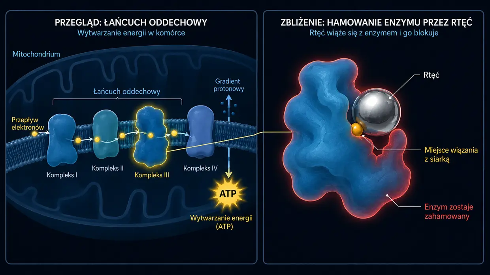

Szumy uszne wywołane lekami i toksynami (ototoksyczność)
Ostatnia aktualizacja: czerwiec 2026
Sam również zmagałem się ze skrajnymi, piekielnymi szumami usznymi. W moim przypadku wywołał je hałas (a nie nagła reakcja na lek), ale ten nieustanny dźwięk był dokładnie takim samym trwałym atakiem na moje nerwy, sen i całe życie. Lekarze również często mówili mi, że muszę po prostu nauczyć się z tym żyć.
Piszę ten artykuł o chemicznych czynnikach wyzwalających, ponieważ temat ten odegrał ważną rolę w moich własnych poszukiwaniach. Od 2012 roku intensywnie zajmuję się biochemią komórkową — także toksykologią i medycyną środowiskową. I właśnie tutaj koło się zamyka: w praktyce lekarzy medycyny środowiskowej (takich jak dr Klinghardt czy dr Mutter) często obserwuje się fascynujące zjawisko. Jeśli u osób z szumami usznymi ukryte obciążenie toksynami lub metalami ciężkimi okazuje się istotnym czynnikiem, ukierunkowane odtruwanie na poziomie komórkowym często może przynieść wyraźne albo odczuwalne złagodzenie szumów usznych. Przedstawiam tu mój aktualny stan wiedzy, oparty na tych poszukiwaniach — i stanowiący podstawę podejść, które później będziemy omawiać na tej stronie.
Chemiczny atak od środka
Kiedy myślimy o szumach usznych, najczęściej od razu mamy przed oczami dwa obrazy: dudniący koncert (hałas) albo potężny stres bądź wewnętrzny stres związany z traumą (psychosomatyka). Istnieje jednak jeszcze trzeci czynnik wyzwalający, który nie jest ani mechaniczny, ani emocjonalny, lecz czysto chemiczny: szumy uszne wywołane lekami lub toksynami. Moim zdaniem ten typ szumów usznych należy wprawdzie do najrzadszych — ale dla pełnego obrazu chcę przedstawić swój punkt widzenia również na ten trzeci czynnik wyzwalający. W języku fachowym nazywa się to ototoksycznością (czyli „toksycznością dla ucha”).
Na pierwszy rzut oka może to brzmieć abstrakcyjnie, ale nasze ucho wewnętrzne jest skrajnie wrażliwe na określone substancje chemiczne. Niektóre leki lub toksyny środowiskowe mogą przez krwiobieg dotrzeć bezpośrednio do ucha wewnętrznego i podrażniać, a nawet uszkadzać znajdujące się tam delikatne komórki rzęsate lub nerw słuchowy.
Mechanizm: jak chemia wytwarza dźwięki
Przypomnijmy sobie kanał jonowy na szczycie stereocyliów, który po przeciążeniu pozostaje trwale zbyt szeroko otwarty i nie zamyka się już prawidłowo — jak wyjaśniłem wcześniej na mojej podstronie o szumach usznych wywołanych hałasem. W przypadku urazu akustycznego mechaniczna siła fal dźwiękowych zmienia geometryczne ułożenie delikatnych stereocyliów.
W przypadku szumów usznych wywołanych lekami lub toksynami końcowy efekt jest często bardzo podobny, tylko prowadzi do niego inna droga. Każdą pojedynczą komórkę rzęsatą w uchu trzeba sobie zasadniczo wyobrazić jako małą biologiczną baterię. Utrzymuje ona niezwykle delikatną równowagę energii (ATP), minerałów i napięcia elektrycznego.
Toksyny środowiskowe lub toksyczne dawki leków mogą zakłócić tę delikatną równowagę, poważnie zaburzając działanie mitochondriów, czyli komórkowych elektrowni. Na poziomie komórkowym, zgodnie z moim rozumieniem biochemii, dzieje się wtedy co następuje:
Ponieważ mitochondria są niezbędne do zaopatrywania komórki w energię, poziom energii komórki — czyli poziom ATP — w konsekwencji spada. W rezultacie maleńkie pompy w błonie komórkowej, które do swojej pracy stale zużywają ATP — czyli energię komórkową — po prostu nie są już w stanie dostatecznie szybko utrzymywać równowagi chemicznej. Wewnątrz komórki zaczyna się więc gromadzić wapń. Ponieważ w biologii wapń jest bezpośrednim wyzwalaczem przekazywania bodźców, ten nadmiar jonów zmusza komórkę do nieustannego i niekontrolowanego wysyłania „błędnych sygnałów”. Dla mnie nie jest to żaden mistyczny zbieg okoliczności, lecz logiczny automatyzm biochemiczny. Mózg odbiera ten nieustanny ostrzał elektryczny jako dźwięk.
To, jaki dokładnie dźwięk przy tym słyszysz — wysoki pisk, syczenie czy niskie buczenie — zależy zwykle po prostu od tego, w którym dokładnie miejscu ślimaka (cochlei) znajdują się komórki rzęsate objęte tym procesem. W tym momencie ucho zazwyczaj nie zostaje fizycznie zniszczone, ale jego delikatny wewnętrzny porządek wypada z rytmu.
Zwarcia elektryczne (nerw słuchowy)
Zagrożone są nie tylko komórki rzęsate, lecz również sam „przewód elektryczny” — nerw słuchowy. Nerw ten otacza ochronna osłonka mielinowa. Ta warstwa izolacyjna jest niezwykle bogata w tłuszcze i minerały, dlatego jest szczególnie podatna na działanie toksyn krążących we krwi. Jeśli osłonka ta zostaje osłabiona lub „przerzedzona” przez stres chemiczny, nerw nie przewodzi już sygnałów prawidłowo. Powstają prawdziwe „zwarcia” elektryczne.
I tutaj ujawnia się czysta logika naszej anatomii: nerw słuchowy nie jest zwykłym pojedynczym drutem, lecz grubą wiązką tysięcy maleńkich włókien nerwowych. Każde z tych włókien odpowiada za przekazywanie jednej określonej wysokości dźwięku. Jeśli wskutek uszkodzenia mieliny wywołanego przez toksyny dochodzi do zwarcia akurat na włóknie nerwowym odpowiedzialnym za wysokie częstotliwości, twój mózg logicznie rejestruje wysoki pisk. Jeśli dotknięte zostaje włókno odpowiedzialne za niskie dźwięki, słyszysz niskie buczenie. To, jaki szum, syk czy pisk odbierasz, absolutnie nie jest więc dziełem przypadku — zależy w decydującej mierze od tego, w którym maleńkim miejscu głównego przewodu została uszkodzona izolacja.
Uniwersalne prawo szumów usznych
Kiedy złoży się wszystkie te elementy układanki, wyłania się jeden wspólny mianownik: według mojego najgłębszego przekonania, opartego na własnych doświadczeniach z szumami usznymi wywołanymi hałasem oraz na moich poszukiwaniach, szumy uszne są ostatecznie rezultatem przewlekle podrażnionych, nadmiernie pobudzonych nerwów uczestniczących w przetwarzaniu dźwięku. Z fizycznego punktu widzenia niemal bez znaczenia jest to, gdzie dokładnie rozlega się strzał startowy tego nadmiernego pobudzenia:
- Czy komórki rzęsate (pod wpływem hałasu lub leków) utknęły w trybie awaryjnym i nieustannie zalewają nerw słuchowy glutaminianem…
- Czy toksyny środowiskowe i metale ciężkie atakują izolację nerwów (mielinę) i wywołują tam bezpośrednie zwarcia…
- Czy też potężny, przewlekły stres psychosomatyczny narasta w mózgu i niejako „odgórnie” utrzymuje ośrodki przetwarzające dźwięk pod stałym napięciem…
Kiedy już zrozumie się tę uniwersalną logikę, szumy uszne często całkowicie tracą swoją tajemniczą grozę.
Z perspektywy moich własnych doświadczeń z szumami usznymi wywołanymi hałasem końcowy rezultat jest prawie zawsze dokładnie taki sam: układ nerwowy w tym obszarze pozostaje przewlekle podrażniony i prowadzi nieustanny ostrzał elektrycznymi sygnałami SOS. Kiedy już zrozumie się tę uniwersalną logikę, szumy uszne często całkowicie tracą swoją tajemniczą grozę — a droga do rozwiązania nagle staje się krystalicznie jasna.
Typowe czynniki wyzwalające (substancje ototoksyczne)
Ale dobrze, wróćmy do tematu: istnieje cała grupa substancji, o których wiadomo, że mogą działać ototoksycznie. (Ważne: nie jest to medyczna lista do samodzielnego diagnozowania, lecz wyłącznie pomoc w ogólnym zrozumieniu tematu!)
1. Leki
Niektóre preparaty mogą nadmiernie pobudzać ucho wewnętrzne. Nie wystarczy jednak znać ich nazwy — trzeba zrozumieć, dlaczego doprowadzają cały układ do wykolejenia. Dopiero kiedy pojmiemy mechanikę uszkodzenia, nasze późniejsze podejście (energia komórkowa i odtruwanie) w ogóle nabiera sensu. Do najbardziej znanych grup należą:
Leki przeciwbólowe w dużych dawkach (zwłaszcza aspiryna/ASA)
Na początek uspokajająca wiadomość: zwykła tabletka na ból głowy z reguły nie powoduje jeszcze szumów usznych. Według badań często mamy tu do czynienia z wyraźnym paradoksem dawki. Niebezpiecznie robi się zazwyczaj dopiero przy rzeczywiście toksycznych, bardzo dużych dawkach (często kilku gramach dziennie). Kiedy do tego dochodzi, modele farmakologiczne sugerują, że lek uruchamia w uchu wewnętrznym trzystopniową reakcję łańcuchową:
- Silnik się dławi: Przyjmuje się, że substancja czynna blokuje prestynę — maleńkie białko, które działa jak silnik w zewnętrznych komórkach rzęsatych. Wskutek tego załamuje się wzmacniacz akustyczny w uchu. W reakcji paniki mózg często podkręca swój centralny „regulator głośności” (Central Gain) do maksimum, aby w ogóle cokolwiek usłyszeć.
- Nadwrażliwość nerwów: Jednocześnie modele sugerują, że lek wprowadza receptory nerwu słuchowego w stan podwyższonej pobudliwości. Próg pobudliwości spada, przez co układ nerwowy reaguje znacznie wrażliwiej nawet na najmniejsze sygnały.
- Awaria zasilania (zapłon): Według badań biochemicznych aspiryna w wysokich dawkach działa w mitochondriach jako „rozprzęgacz”. Mówiąc obrazowo, wyciąga komórce wtyczkę z gniazdka (niedobór ATP). I właśnie tutaj kryje się fascynująca, logiczna różnica w stosunku do urazu akustycznego: w przypadku hałasu delikatne stereocylia komórki zostają dosłownie wygięte przez mechaniczną siłę. Kanał wapniowy pozostaje przez to trwale otwarty niczym zacinające się drzwi, a wapń napływa bez żadnej kontroli. Przy przedawkowaniu aspiryny tak się nie dzieje. Stereocylia stoją całkowicie nienaruszone na swoim miejscu. Tutaj „tylko” chemia wypadła z równowagi. Do komórki nie napływa wcale więcej wapnia niż zwykle — lecz przez gwałtowny spadek energii maleńkie pompy wapniowe komórki po prostu nie nadążają już z jego usuwaniem. W tym momencie komórka jest całkowicie przeciążona nawet zwykłą ilością napływającego wapnia. Końcowy rezultat jest taki sam: wapń gromadzi się wewnątrz i zmusza komórkę do nieprzerwanego uwalniania neuroprzekaźnika — glutaminianu.
Możliwy rezultat — szumy uszne: ta niekontrolowana fala glutaminianu trafia na nerwy o już obniżonym progu pobudliwości (etap 2) i zostaje wysłana do mózgu, którego regulator głośności jest odkręcony do oporu (etap 1). Powstaje ogłuszający, nieustanny ostrzał. I właśnie ta prosta logika komórkowa wyjaśnia również codzienne zjawisko, na które nawet wielu lekarzy często nie potrafi udzielić spójnej odpowiedzi: dlaczego wujek, który przez tydzień przyjmował ogromne, toksyczne dawki aspiryny, po jej odstawieniu często już po krótkim czasie znów słyszy ciszę — podczas gdy jego 26-letni siostrzeniec, który tylko dwa razy był w głośnym klubie, od czterech miesięcy cierpi na szumy uszne, które po prostu nie chcą ustąpić? Dla mnie odpowiedź jest tutaj krystalicznie jasna: u wujka doszło do biochemicznej awarii zasilania połączonej z nadwrażliwością nerwu słuchowego. Kiedy lek zostaje odstawiony w porozumieniu z lekarzem i usunięty z organizmu, elektrownie komórkowe mogą znów pracować w normalnym trybie fizjologicznym. Pompy ponownie otrzymują dzięki temu niezbędną energię, mogą usunąć nadmiar wapnia, a układ wraca do prawidłowej pracy. U siostrzeńca z klubu doszło natomiast do brutalnego, mechanicznego oddziaływania siły. Z moich poszukiwań i mojego rozumienia wynika, że jego delikatne stereocylia znajdują się później w zmienionym położeniu geometrycznym: jedne są przechylone mocniej, inne słabiej. W rezultacie kanały jonowe pozostają trwale szerzej otwarte, przez co nawet przy niezmienionym dopływie energii do komórki trafia więcej wapnia, niż przewiduje fizjologia. To tak, jakby ktoś brutalną siłą wygiął zawias w drzwiach. I logicznie rzecz biorąc, nie naprawi się to samo w jeden weekend tylko dlatego, że hałas już ustał — więcej informacji znajdziesz na mojej podstronie o szumach usznych wywołanych hałasem.
Niektóre antybiotyki (aminoglikozydy)
Te silne antybiotyki stosuje się zazwyczaj wyłącznie w szpitalu przy ciężkich zakażeniach bakteryjnych (na przykład gentamycynę). Mają wyjątkowo podstępną właściwość: często gromadzą się właśnie w płynie ucha wewnętrznego i są stamtąd usuwane niezwykle powoli — mogą pozostawać tam przez tygodnie lub miesiące. Reagują tam z żelazem obecnym w organizmie i wywołują potężną eksplozję „wolnych rodników” — reaktywnych form tlenu (ROS). Przypomina to biochemiczny pożar rozprzestrzeniający się po uchu wewnętrznym, który atakuje delikatne błony komórkowe i wewnętrzny szkielet aktynowy stereocyliów. Działa tu prosta logika biologiczna z dwoma możliwymi zakończeniami:
- Zakończenie 1 (śmierć komórki): Jeśli organizm jest w tym czasie i tak już osłabiony, ma niewielkie rezerwy składników odżywczych lub istnieją wcześniejsze uszkodzenia, komórka pod naporem tego chemicznego pożaru całkowicie się załamuje i umiera (apoptoza). Paradoksalny rezultat: w tym przypadku zazwyczaj nie powstają szumy uszne. Martwa komórka już nie nadaje. Zamiast tego pojawia się wyłącznie „niemy” ubytek słuchu (głuchota) dokładnie w tym paśmie częstotliwości.
- Zakończenie 2 (walka o przetrwanie = szumy uszne): Komórka ledwo przeżywa atak, ale pozostaje potężnie uszkodzona strukturalnie. Zasadniczo wygląda to dokładnie jak uraz akustyczny, tylko wywołany czysto chemicznie. Sztywny wewnętrzny szkielet (aktyna) zapada się, przez co stereocylia dosłownie więdną jak kwiaty bez wody. Ale komórka nadal żyje! A ponieważ żyje, desperacko próbuje walczyć z wapniem napływającym przez dziurawą błonę. Ponieważ ten napływ jonów jest bezpośrednim chemicznym poleceniem przekazywania bodźca, ciężko uszkodzona komórka zostaje zmuszona do nieustannego wystrzeliwania glutaminianu — neuroprzekaźnika — w stronę nerwu słuchowego, w trwałym trybie paniki. Z tej komórkowej walki o przetrwanie powstaje nieustanny ostrzał elektryczny — i dokładnie to odbierasz jako szumy uszne.
Diuretyki (silnie działające leki moczopędne)
Tak zwane diuretyki pętlowe nie tylko usuwają z organizmu wodę, lecz także masowo wypłukują elektrolity, takie jak potas i sód. Problem? Ucho wewnętrzne ma własne małe źródło napięcia — prążek naczyniowy (stria vascularis). Ta warstwa tkanki nieustannie pompuje potas do płynu w uchu, aby utrzymać tam stałe napięcie elektryczne — to bateria, z której komórki rzęsate czerpią prąd potrzebny do słyszenia. Leki moczopędne blokują dokładnie ten biochemiczny mechanizm pompowania. W konsekwencji napięcie elektryczne w uchu gwałtownie spada. Biologiczna bateria nagle jest „pusta”, a układ słuchowy wpada w chaotyczny stan alarmowy, który rozładowuje się jako szum lub pisk.
Leki stosowane w chemioterapii (takie jak cisplatyna)
Te agresywne leki przeciwnowotworowe często bazują na platynie (metalu ciężkim). Są zaprogramowane tak, by ingerować w DNA komórek. Jeśli jednak pod wpływem takiego leku dochodzi do szumów usznych, według modeli farmakologicznych przyczyną jest prawdziwy biochemiczny pożar obejmujący całe ucho wewnętrzne: cisplatyna całkowicie pozbawia wtedy komórkę jej najważniejszej substancji ochronnej wytwarzanej przez organizm (glutationu). Bez tej tarczy ochronnej wolne rodniki wyżerają mikroskopijne dziury w błonie komórkowej i niszczą pompy jonowe. Rezultatem jest skrajna nierównowaga jonowa: wapń zalewa komórkę i zmusza ją do nieustannego ostrzału glutaminianem. Jednocześnie cisplatyna jest silnie neurotoksyczna i wręcz rozkłada osłonkę mielinową (izolację) nerwu słuchowego. Kiedy ciągły ostrzał uszkodzonej komórki trafia na niechroniony, odsłonięty nerw, bezpośrednio w głównym przewodzie prowadzącym do mózgu powstają rzeczywiste, mierzalne zwarcia i błędne wyładowania. Również tutaj możliwe są dwa biologiczne scenariusze: jeśli komórka zostaje całkowicie zniszczona (apoptoza), zazwyczaj nastaje cisza (głuchota). Jeśli przeżywa jako ciężko uszkodzona ruina z nieszczelnymi błonami i odsłoniętymi nerwami, często wysyła trwały sygnał zakłócający. To wyjaśnia, dlaczego szumy uszne po chemioterapii są często skrajnie uporczywe.
Chinina (lek przeciwmalaryczny i preparaty przeciw skurczom mięśni)
Chinina ma silne działanie zwężające naczynia. Ucho wewnętrzne to absolutny anatomiczny ślepy zaułek — krew doprowadza do niego tylko jedna jedyna, maleńka tętnica błędnikowa (arteria labyrinthi). Nie ma tam żadnych „objazdów”. Jeśli chinina zwęża tę maleńką tętnicę, a jednocześnie sprawia, że czerwone krwinki stają się mniej elastyczne, przepływ krwi zaczyna się zacinać. Komórki rzęsate zostają wówczas odcięte od absolutnie niezbędnego dopływu tlenu i składników odżywczych. Zaczynają się potężnie dusić i natychmiast przechodzą w alarmowy tryb prowadzący do szumów usznych.
2. Metale ciężkie i toksyny środowiskowe
Metale ciężkie — między innymi rtęć, ołów, glin i kadm — działają na poziomie komórkowym niczym skrajnie agresywni sabotażyści. Kto zajmuje się zaawansowanymi protokołami odtruwania, ten wie: nie zatruwają one komórek ucha wewnętrznego jedynie w jakiś ogólny, rozproszony sposób, lecz wpinają się dokładnie w procesy biologiczne i je blokują. W ślimaku i nerwie słuchowym dzieje się to za pośrednictwem czterech skrajnie niszczących mechanizmów:
- 01Koń trojański
- 02Tiolowy sabotaż
- 03Kula wyburzeniowa
- 04Niszczarka mieliny
Mechanizm 1: koń trojański (wypieranie pierwiastków śladowych)
Metale ciężkie, między innymi kadm i rtęć, są często pod względem chemicznym zdumiewająco podobne do niezbędnych pierwiastków śladowych — przede wszystkim cynku i selenu. Organizm daje się oszukać i wbudowuje metal ciężki w białka zamiast cynku. Rezultat jest fatalny: cynk działa bowiem na receptorach nerwu słuchowego jak naturalny „hamulec”. Sprawia, że nerw nie reaguje nadmiernie na każdy najmniejszy bodziec. Kiedy metal ciężki wypiera cynk, hamulec ten całkowicie przestaje działać. Sygnały akustyczne uderzają bez żadnego hamowania w układ nerwowy, co w mojej ocenie objawia się ogłuszającymi szumami usznymi. Jednocześnie wypieranie selenu potężnie zakłóca produkcję najważniejszego przeciwutleniacza wytwarzanego przez organizm (glutationu). Ochrona komórek może się załamać.
Mechanizm 2: tiolowy sabotaż (wyginanie białek)

Metale ciężkie mają ponadto ogromne chemiczne powinowactwo do siarki. Większość naszych enzymów i maleńkich pomp komórkowych (takich jak pompy wapniowe zależne od ATP) posiada zawierające siarkę miejsca wiązania, tak zwane grupy tiolowe (-SH). Kiedy metal ciężki dociera do ucha wewnętrznego, natychmiast przyłącza się do tych grup tiolowych. W chwili, gdy metal łączy się z enzymem, wymusza zmianę przestrzennej struktury 3D białka — dosłownie je wygina. Wskutek tego pompa wapniowa komórki rzęsatej blokuje się i przestaje działać.
Mechanizm 3: biologiczna kula wyburzeniowa (bezpośrednie niszczenie komórek)
Oprócz sabotowania pomp metale atakują sprzęt komórki również bezpośrednio i fizycznie. Ołów i kadm wnikają do mitochondriów (elektrowni komórki), wciskają się w komórkowy łańcuch oddechowy i potężnie dławią produkcję ATP. Obrazowo mówiąc, komórka zaczyna się dusić od środka. Jednocześnie metale wywołują w uchu eksplozję wolnych rodników, które dosłownie utleniają bogatą w tłuszcze warstwę ochronną (błonę) komórki rzęsatej — jełczeje, topi się i robi się dziurawa (peroksydacja lipidów). Toksyczny nadmiar wapnia wdziera się niczym przez przerwaną tamę. Metale atakują ponadto sztywny szkielet białkowy (aktynę) wewnątrz maleńkich stereocyliów. Mostki molekularne pękają, stereocylia więdną, załamują się i unieruchamiają kanały jonowe w pozycji stale otwartej.
Mechanizm 4: niszczarka mieliny (atak na główny przewód)
Metale ciężkie wżerają się również bezpośrednio w sam przewód — nerw słuchowy — i niszczą jego warstwę izolacyjną, mielinę. Warstwa ta składa się w niemal 80% z tłuszczów, co czyni ją idealną ofiarą stresu oksydacyjnego. Wolne rodniki dosłownie wyżerają tłuszcz. Rtęć wiąże się na przykład z „zasadowym białkiem mieliny” — molekularnym klejem warstwy izolacyjnej — przez co zaczyna się ona łuszczyć. W toksykologii istnieje silne podejrzenie, że ołów idzie jeszcze o krok dalej i wybiórczo uszkadza tak zwane komórki Schwanna — to maleńcy budowniczowie, którzy właściwie powinni naprawiać mielinę. Bez izolacji przewodzenie elektrycznych sygnałów słuchowych drastycznie zwalnia, sygnały przeskakują na sąsiednie, odsłonięte włókna nerwowe (przesłuch) i wywołują potężne błędne wyładowania.
-
01Przedostanie się substancji chemicznej
Lek w toksycznej dawce, metal ciężki lub toksyna środowiskowa dociera przez krwiobieg do ucha wewnętrznego.
-
02Równowaga się załamuje
Poziom ATP spada, pompy przestają nadążać, wapń gromadzi się wewnątrz komórki, a mielina ulega przerzedzeniu.
-
03Trwały błędny sygnał
Osłabiona komórka nieustannie uwalnia glutaminian albo sygnały przeskakują na sąsiednie włókna — mózg odbiera to jako dźwięk.
Ale dlaczego w takim razie nie każdy ma szumy uszne? (Loteria metali ciężkich i burza doskonała)
W tym miejscu nasuwa się logiczne pytanie: skoro rtęć (z ryb lub amalgamatu), ołów (ze starych rur) i inne metale sieją tak wielkie spustoszenie, to dlaczego połowa ludzkości nie dostaje szumów usznych natychmiast po pizzy z tuńczykiem? Odpowiedź kryje się w naszych własnych tarczach ochronnych i w prawdziwej biologicznej loterii — oraz w tym, że szumy uszne niemal nigdy nie są wywoływane przez jeden, odosobniony czynnik.
1. Loteria toksykologiczna (lokalny słaby punkt):
Metale ciężkie nie mają wbudowanego systemu GPS prowadzącego do ucha. Krążą we krwi na oślep i szukają miejsca najmniejszego oporu (locus minoris resistentiae). To, gdzie się odkładają, jest często czystym przypadkiem i zależy od tego, gdzie twój organizm ma akurat słaby punkt. Jeśli na przykład w nocy bardzo mocno zgrzytasz zębami albo masz ukryty stan zapalny w obrębie karku i szczęki, przepuszczalność naczyń wokół ucha jest wyjątkowo wysoka. Tak zwana bariera krew–błędnik, która właściwie powinna chronić ucho, jest wtedy szeroko otwarta. Rtęć znajduje te otwarte drzwi i odkłada się dokładnie tam, przy nerwie słuchowym, podczas gdy u innej osoby może po prostu przemieścić się dalej.
2. Wewnętrzne wysypisko, tarcza glutationowa i obciążenie wyjściowe:
Zdrowy organizm produkuje w wątrobie ogromne ilości glutationu — cząsteczki, która wiąże metale ciężkie niczym kajdankami, dzięki czemu organizm wydala je, zanim dotrą do ucha. Ale tu wkracza twarda rzeczywistość ekspozycji: niektórzy ludzie po prostu — często zupełnie nieświadomie — mają kontakt ze znacznie większą ilością metali ciężkich niż inni. Czy to przez zanieczyszczone powietrze, stare wypełnienia amalgamatowe w jamie ustnej, miejsce pracy, palenie, żywność zawierającą metale ciężkie czy stały kontakt ze skażonymi przedmiotami codziennego użytku. Ostatecznie jest to zawsze toksyczne połączenie samej skali ekspozycji ze zdolnością organizmu do wiązania oraz wydalania tych toksyn. Jeśli organizm sobie z tym nie radzi, często odkłada toksyny w rzekomo bezpiecznych „składowiskach” (takich jak kości lub zwykła tkanka tłuszczowa), aby usunąć je z krwiobiegu. I dokładnie tutaj kryje się zgubna biologiczna pułapka dla naszego słuchu: nasz układ nerwowy — a zwłaszcza izolująca osłonka mielinowa nerwu słuchowego — składa się w niemal 80% z czystych tłuszczów. Kiedy organizm desperacko próbuje więc „tymczasowo zaparkować” lipofilne (rozpuszczalne w tłuszczach) metale ciężkie w tkance tłuszczowej, w pechowym rozdaniu tej loterii obrywa często właśnie ta niezwykle wrażliwa tkanka nerwowa albo struktury otaczające komórki rzęsate.
Do tego dochodzi twardy, często przemilczany fakt biologiczny: wiele osób rozpoczyna tę toksyczną loterię już w dniu narodzin ze znacznym obciążeniem wyjściowym. Dlaczego? Ponieważ badania sugerują, że podczas ciąży matki przekazują płodowi przez łożysko część własnych zapasów metali ciężkich nagromadzonych przez lata. U niektórych komórkowa beczka jest więc od początku już wyraźnie pełniejsza.
Niebezpiecznie robi się w końcu wtedy, gdy ten system ochronny się załamuje: pod wpływem skrajnego stresu, uwarunkowań genetycznych lub niedoboru składników odżywczych procesy odtruwania nagle zaczynają pracować na granicy możliwości. Otwierają się wewnętrzne składowiska organizmu albo nowa porcja toksyny nie zostaje nawet przechwycona, krąży we krwi i — jak w opisanej loterii — nieuchronnie szuka słabego punktu w organizmie.
3. Zgubna mieszanka (burza doskonała):
W biologicznej praktyce często mamy tu jednak do czynienia ze skrajnie złożoną mieszanką — i to rozwiewa również nieporozumienie, jakoby każdy, kto dostaje szumów usznych po zdarzeniu związanym z hałasem, musiał być automatycznie całkowicie zatruty metalami ciężkimi. Tak nie jest.
Często dzieje się raczej tak: człowiek nosi już w sobie pewne podstawowe obciążenie toksynami środowiskowymi lub metalami ciężkimi — w komórkach rzęsatych, ich mitochondriach albo bezpośrednio w nerwie słuchowym. Osłonka mielinowa może być już lekko przerzedzona, pompy wapniowe mogą zbliżać się do granicy wydolności, a komórki pracować na skraju możliwości. Samo to często nie wywołuje jeszcze żadnych trwałych szumów usznych. Twój organizm to buforuje i z trudem balansuje na linie.
Ale potem życie dokłada kolejne elementy: wpadasz w fazę skrajnego przewlekłego stresu. Hormony stresu (adrenalina/kortyzol) zwężają naczynia krwionośne, potężnie ograniczają ukrwienie ucha i odbierają ci regenerujący sen. Układ nie może się już nocą regenerować. Jeśli dokładnie w tym stanie skrajnej podatności zostajesz dodatkowo narażony na hałas (bez względu na to, czy jest to jednorazowy gwałtowny impuls, czy przewlekła, stała ekspozycja), w którymś miejscu tego łańcucha cały układ ostatecznie się załamuje. Wstępnie uszkodzony sprzęt nie jest już po prostu w stanie zamortyzować tej mechanicznej siły. Równowaga jonowa się załamuje, szkielet aktynowy się zapada albo osłonka mielinowa ostatecznie odmawia posłuszeństwa — i mogą powstać trwałe sygnały elektryczne.
Z mojego punktu widzenia jest to zgubne połączenie: toksyna stopniowo osłabia sprzęt, stres odcina dopływ tlenu, a hałas jest potem często już tylko ostatnią kroplą, która przepełnia i tak pełną po brzegi komórkową beczkę.
Moim zdaniem na drugim końcu spektrum istnieją oczywiście również szumy uszne wywołane wyłącznie przez toksyczne leki lub ciężkie zatrucie metalami ciężkimi. Jeśli obciążenie chemiczne — na przykład wskutek agresywnej chemioterapii lub ostrego zatrucia — jest wystarczająco duże, absolutnie nie potrzeba żadnej „burzy doskonałej” ani dodatkowego zdarzenia związanego z hałasem. W takich przypadkach sama toksyna w zupełności wystarczy, by sparaliżować elektrownie komórkowe lub uszkodzić nerwy.
Dlaczego szumy uszne wywołane toksynami (metalami ciężkimi i pestycydami) są często tak uporczywe
Kto unika hałasu, natychmiast zatrzymuje działanie czynnika wyzwalającego. W przypadku szumów usznych wywołanych toksynami — a mam tu na myśli bardzo konkretnie obciążenie rzeczywistymi toksynami środowiskowymi, pestycydami lub metalami ciężkimi — sprawa jest często znacznie bardziej skomplikowana. Ten typ szumów usznych bywa bowiem skrajnie trudny do zwalczenia i uporczywy przede wszystkim wtedy, gdy substancje te rzeczywiście okazują się głównym mechanizmem lub istotnym czynnikiem w powstawaniu szumów usznych. Dzieje się tak dlatego, że dosłownie odkładają się głęboko w tkance nerwowej i komórkach. Nie znikają po prostu z krwiobiegu po kilku godzinach jak zwykła tabletka przeciwbólowa. Silnie wiążą się z tkankami, a organizm często jest w stanie wydalać te uporczywe toksyny jedynie z wielkim trudem, niezwykle powoli i przez długi czas.
Co robić?
I co można teraz zrobić? Naukowe i praktyczne podstawy opisanych tutaj mechanizmów znajdziesz na mojej stronie ze źródłami. Jeśli chcesz zgłębić temat i zobaczyć, jak w moim ogólnym podejściu dobieram działania do różnych przyczyn szumów usznych, kliknij poniższy link:
Ważna informacja
Nigdy nie odstawiaj samodzielnie leków na receptę! Jeśli szumy lub inne dźwięki w uszach pojawiły się w związku z przyjmowaniem leków — zwłaszcza nagle — możliwie szybko skonsultuj się z lekarzem, aby ustalić dalsze postępowanie. Każdą zmianę w przyjmowaniu leków należy przeprowadzać pod opieką lekarza.
Treści, modele wyjaśniające i strategie udostępnione na tej stronie nie stanowią porady medycznej. Moje osobiste doświadczenia dotyczą szumów usznych wywołanych hałasem; mechanizmy związane z lekami i toksynami przedstawiam na podstawie własnych poszukiwań. Każdy organizm jest inny. Nie jestem lekarzem i nie obiecuję wyleczenia. W razie problemów zdrowotnych skonsultuj się z wykwalifikowanym lekarzem. Z opisanych tutaj podejść korzystasz na własną odpowiedzialność.